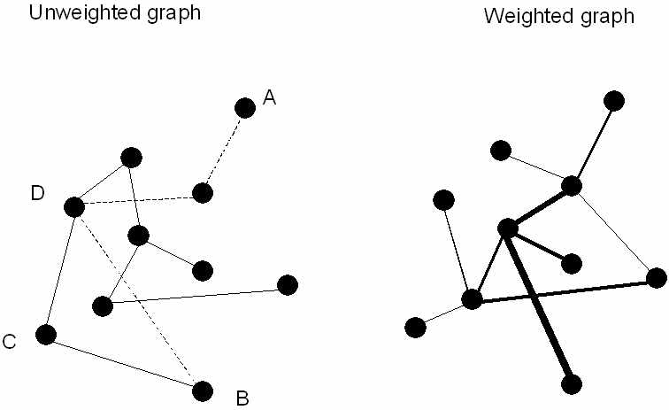
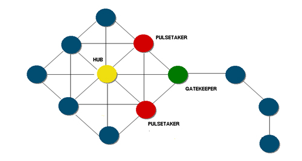
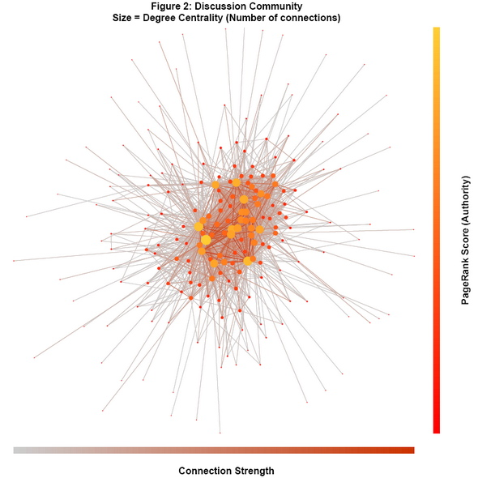
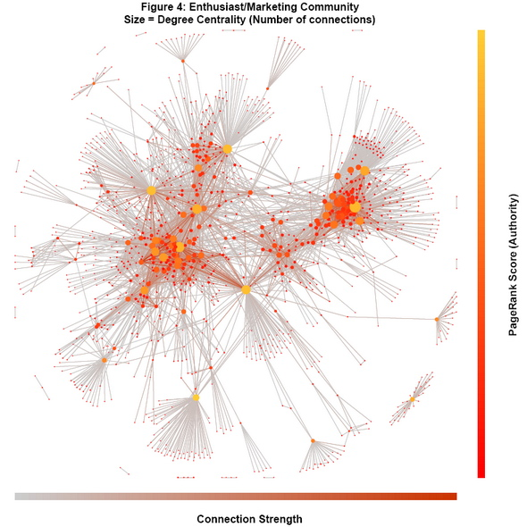

PyData 2013 Tutorial:
Social Network Analysis
~
Katherine Chuang @katychuang ............
1. Introduction to SNA Theory
SNA is a powerful research technique.
- Tracking health epidemics (i.e. spread of infections)
- Measuring an online community (i.e. conversation patterns)

SNA is essentially graph theory. A network is made up of nodes and edges.

A graph can be directed.

A graph can also be weighted
Social Roles
Social Network Metrics for individual nodes
- Centrality - an individual node's number of links
- Degree – number of links from and to the node.
- Betweenness – The extent to which an individual node is 'between' other nodes
- Closeness – The degree to which an individual is near all other individuals in a network (directly or indirectly).
Other metrics for subgroups
- Cliques - a group where every node is directly connected to each other
- Clustering Coefficient - the average density of a subgroup
- Blockmodels - a cluster of users based on type of relationship, i.e. novices
- Eigenvector Centrality - highlights the importance of users in a network

Yellow = experts answering questions; Red = novices http://lithosphere.lithium.com/t5/science-of-social-blog/ Social-Graphs-The-Art-and-the-Insights/ba-p/5713

Lots of dialogue back and forth between users http://lithosphere.lithium.com/t5/science-of-social-blog/ Social-Graphs-The-Art-and-the-Insights/ba-p/5713

Q&A + Discussion http://lithosphere.lithium.com/t5/science-of-social-blog/ Social-Graphs-The-Art-and-the-Insights/ba-p/5713

Experts are scattered in community http://lithosphere.lithium.com/t5/science-of-social-blog/ Social-Graphs-The-Art-and-the-Insights/ba-p/5713
Social Interaction Design

UI design for self-presentation
and interacting with others
It's your social history...

Design patterns
- Discussion threads, reviews, classified listing, news, data sharing
- Responding via likes, votes, free text
- Each unit of analysis has a sender and receiver (2 nodes, 1 edge)
Recap: Map online conversations


please ensure you have Python v2.7 and Networkx v1.7
$ pip freeze # alternatively, if you do not have these installed, # you can create an account on pythonanywhere.com
2. Introduction to NetworkX
NetworkX v1.7

Workflow
- Read in raw data
- NetworkX magic
- Output data in json format
- D3.js magic (optional)
NetworkX basics
import networkx # import library g = networkx.Graph() # create undirected graph object g.add_edge(1,2) # add data g.add_edge(3,1) g.add_node(4) print g.number_of_nodes() # 4 print g.nodes() # [1, 2, 3, 4] print g.number_of_edges() # 2 print g.edges() # [(1, 2), (1, 3)]
NetworkX Directed Graph
g = networkx.DiGraph() # directed graph g.add_edges_from([("A","B"), ("C","A")]) print g.in_degree(with_labels=True) # {'A': 1, 'C': 0, 'B': 1} print g.out_degree(with_labels=True) # {'A': 1, 'C': 1, 'B': 0} print g.neighbors("A") # ['B'] print g.neighbors("B") #['A']
NetworkX modules
print g.degree() # {1: 2, 2: 1, 3: 1, 4: 0} print networkx.betweenness_centrality(g) # {1: 0.3333333333333333, 2: 0.0, 3: 0.0, 4: 0.0} print networkx.degree_centrality(g) # {1: 0.6666666666666666, 2: 0.3333333333333333, # 3: 0.3333333333333333, 4: 0.0}
Time for magic tricks.
# Verify your python installation $ python --version # Make sure networkx can be used. $ python -c "import networkx;" # Open up your text editor
3. Let's code!
Open up a text editor

PythonAnywhere.com has one built in.
Exercise..
- Importing data
- Plot data points
- Export images
A stroll through the code.
Documentation: http://networkx.github.com/documentation/latest/contents.html MatPlotLib: http://matplotlib.org/users/gridspec.html
Link: http://networkx.github.com/documentation/latest/examples/drawing/giant_component.html
"Social interaction design is the application of levers to steer and guide emerging social practices" -- Adrian Chan, Gravity7
Questions?
- Email: katychuang@acm.com
- Twitter: @katychuang
- Code: github.com/katychuang